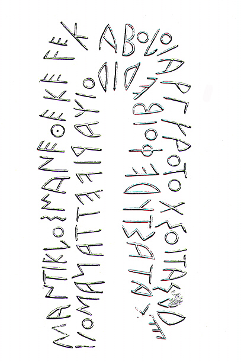
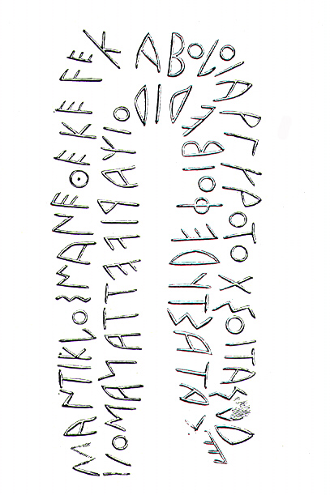
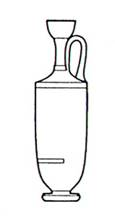
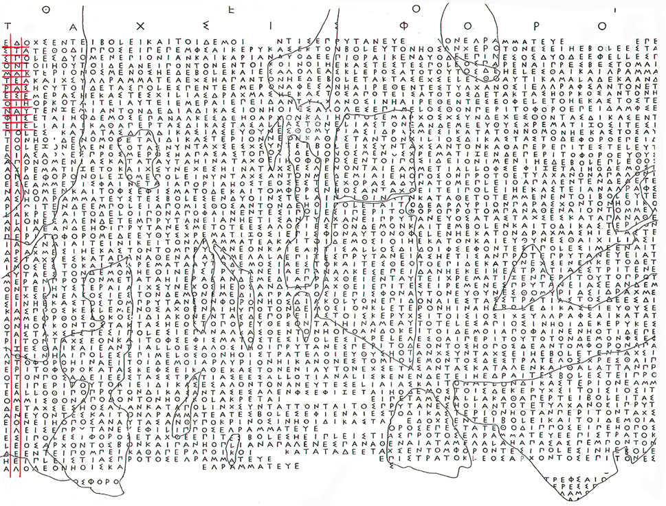

| acrotère |
élément
décoratif, sculpté ou moulé, figurant
au sommet ou aux angles d'un fronton.
Ce peut être des motifs floraux ou une victoire comme
sur le temple à Olympie, ou alors des têtes d'animaux.
On pourrait les comparer à nos gargouilles médiévales
qui avaient cependant un registre moins large puisqu'elles
représentaient essentiellement des créatures
imaginaires.
|
| Amphiaraos |
valeureux
guerrier argien et devin renommé
Amphiaraos a participé malgré lui à la
guerre des Sept contre Thèbes. Il savait, en tant que
devin, qu'aucun des Sept, à l'exception d'Adraste,
ne survivrait au combat, mais sa femme, Eriphyle, l'avait
lié par un serment qui l'obligeait à prendre
part à l'expédition. Dans la déroute
qui suivit les assauts et alors qu'il fuyait Thèbes,
la terre s'entr'ouvrit et l'engloutit tout entier, avec char
et équipement. En fendant le sol devant lui, la foudre
de Zeus le fit échapper à la mort.
C'est à l'endroit de sa disparition miraculeuse, à
Oropos en Attique, qu'un sanctuaire fut établi. On
y venait en quête de guérison consulter Amphiaraos,
qui apparaissait en songe pendant le sommeil.
|
| Amphictionie
ou Amphictyonie |
confédération
de caractère religieux de cités grecques établies
autour (du grec amphi + ktizo) d'un sanctuaire
important.
On en parle essentiellement à propos de Délos
et de Delphes. L'Amphictionie était chargée
de la protection et de l'administration du sanctuaire. A Delphes,
chaque cité disposait d'une voix lors des votes. De
nombreuses rivalités et guerres entre ses membres ont
eu lieu car chacun voulait s'assurer une prédominance
à l'intérieur de ce groupement.
|
| Archiloque |
poète
élégiaque grec originaire de Paros. Il vécut
vers le milieu du VIIe s. av. J.-C.
Il prit part à divers combats à Thasos et participa
notamment à la fondation de la colonie. Il serait mort
en combattant lors d'un affrontement entre Naxos et Paros.
Sa poésie, qui ne nous est parvenue que par fragments,
était très personnelle : le ton pouvait être
plaisant et badin ou extrêmement mordant. Archiloque
était réputé à travers toute l'Antiquité
pour l'esprit cinglant avec lequel il attaquait ses ennemis
et même parfois ses amis. Il fut le plus grand spécialiste
du rythme iambique.
|
| archonte |
magistrats
les plus importants d'une cité.
A Athènes, ils sont 9: l'archonte éponyme (il
donne son nom à l'année et est responsable du
calendrier et de l'organisation des Grandes Dionysies), l'archonte-roi
(chef de la religion d'Etat), le polémarque (préposé
aux sacrifices funèbres et aux jeux funéraires)
et les 6 thesmothètes (les secrétaires).
Avant la réforme de Clisthène, ils étaient
élus, choisis parmi les membres des deux premières
classes censitaires.
Après la réforme de Clisthène et les
mesures de 487/6, il y eut un secrétaire de plus et
les archontes ne furent plus élus mais tirés
au sort pour un an. A leur sortie de charge, ils entraient
dans le conseil de l'Aéropage.
|
| asylie |
privilège
accordé par une cité à des étrangers
ou à une autre cité les protégeant de
représailles ou de prise.
L'individu, normalement considéré comme responsable
des dettes de l'un de ses concitoyens dans une cité,
était ainsi à l'abri de toute saisie sur ses
propres biens.
|
| atélie |
immunité
fiscale.
L'atélie est un privilège accordant à
son bénéficiaire l'exemption partielle ou totale
des taxes et impôts prélevés par la cité.
Le bénéficiaire pouvait être un citoyen
ou un étranger. Il faut relever que les Grecs ne connaissaient
pour ainsi dire pas d'impôts directs, mais des taxes
indirectes de toutes sortes (taxes sur l'importation et l'exportation,
sur l'achat et la vente de marchandises, ...)
|
| boule |
1.
corps délibératif commun à la plupart
des cités grecques.
2. dans la démocratie athénienne, c'est le Conseil,
formé de 500 citoyens tirés au sort parmi les
candidats de chaque dème. La boule préparait
les sessions de l'Assemblée des citoyens (ekklesia)
en rédigeant les propositions de lois et en établissant
l'ordre du jour. Son mode de recrutement répondait
à divers critères selon les cités, mais
toujours sous forme démocratique (tout citoyen de plus
de 30 ans pouvait y accéder, mais pour deux périodes
au maximum). Les bouleutes se réunissaient généralement
au bouleuterion. Par rotation, une partie d'entre eux, nommés
prytanes, assuraient la permanence de l'Etat. Certains y étaient
même présents de jour comme de nuit.
|
| boustrophédon |
type
d'écriture archaïque allant alternativement de
gauche à droite, puis de droite à gauche, à
la façon d'un bœuf qui trace un sillon dans un
champ.
Utilisé plus particulièrement dans le domaine
religieux, il disparut presque totalement au début
du Ve siècle av. J.-C.
 
(cliquer sur l'image pour voir le détail) 
(cliquer sur l'image pour voir le détail)
|
| dème |
une
des 139 unités géographiques et administratives
de la cité d'Athènes.
Le dème peut correspondre à un village entier
ou à un quartier de la ville d'Athènes. C'est
le premier degré de la vie politique: le dème
a ses assemblées, ses magistrats et ses fêtes
religieuses.
Après la réforme de Clisthène, les citoyens
athéniens incluèrent dans leur nom le nom de
leur dème: d'où NOM - NOM DU PERE - NOM DU DEME.
|
| démotique |
troisième
partie du nom complet d'un citoyen athénien.
Depuis 507, après son nom et son patronyme (nom du
père au génitif), le citoyen mentionne son démotique
(nom du dème). Ainsi: Socrate, fils de Sophroniskos,
du dème d'Alopékè. Le démotique
indique de quelle municipalité (dème) le citoyen
est issu. Suite à la réforme de Clisthène,
le citoyen se définissait non plus par ses appartenances
familiales, mais par son dème.
A l'origine, le démotique correspondait au "domicile"
du citoyen, mais il eut tendance, au cours du Ve s., à
perdre cette valeur pour désigner plutôt son
"origine", car même quand le citoyen changeait
de domicile, il restait inscrit dans son dème d'origine.
Le démotique est reconnaissable à sa forme:
il est construit sur le radical du nom du dème auquel
on ajoute la terminaison -eus ou -ios, et reste
toujours invariable. Du dème d'Alopékè,
se dira: Alopekeus.
|
| ekklesia |
assemblée
générale de tous les citoyens, c'est-à-dire
de tous les hommes majeurs, de condition libre et de naissance
légitime.
L'Assemblée est compétente pour toutes les décisions
concernant la vie politique de la cité. Elle vote les
propositions soumises par la boule, en les modifiant
au besoin. Conscients qu'elle peut être sujette à
des influences diverses voire contradictoires, les Anciens
cherchèrent par différents moyens à en
tempérer les revirements éventuels.
A Athènes, convoquée par la boule (voir
ce terme), l'Assemblée se tenait habituellement 3 à
4 fois par mois et réunissait généralement
un minimum de 6000 citoyens. Elle avait lieu en ville, sur
la Pnyx. Comme les citoyens paysans de l'Attique convoqués
perdaient une journée de travail en se rendant à
l'Assemblée, l'absentéisme était manifeste.
Afin de lutter contre cette tendance, Athènes instaura
un mode de défraiement appelé le misthos,
qui consistait en 3 oboles.
|
| éphores |
magistrats
élus annuellement à Sparte.
Ils étaient au nombre de cinq et possédaient
des pouvoirs très étendus. D'un côté,
ils pouvaient négocier des traités internationaux
et détenaient des pouvoirs judiciaires très
étendus auxquels même les rois étaient
soumis. De l'autre, ils avaient la haute main sur l'administration.
Le président de leur collège était en
outre éponyme: il donnait son nom à l'année,
comme l'archonte à Athènes et les consuls à
Rome.
|
| épistate |
président
d'un jour des prytanes à la boule ou l'ekklesia
athéniennes.
Tiré au sort parmi les prytanes, il avait en sa possession
les clés du sanctuaire où étaient déposés
le trésor public, les archives et les sceaux de l'Etat.
C'est lui qui désigne les 9 proèdres, qui font
office de modérateurs et président les réunions
de la boule.
|
| Gymnasiarque |
nom qui a comme suffixe le terme "-arque" qui signifie "pouvoir" (on le retrouve dans monarque). Le gymnasiarque, par conséquent, est le chef d'un gymnase, qui, dans toute cité grecque, est un lieu très important au point que la fonction de gymnasiarque devint à l'époque hellénistique l'une des magistratures principales. Le gymnasiarque avait en effet la haute main sur la formation intellectuelle et physique des jeunes élites de la cité. |
| isopolitie |
droit que s'accorde
mutuellement deux cités.
Muni de ce droit, un citoyen de la cité A peut venir
s'établir dans la cité B et jouir des droits de
citoyen. |
| Lécythe |
Vase grec à anse, de forme allongée, à col étroit et à embouchure évasée.

(Fr. Lissarague, Vases grecs. Les Athéniens et leurs images, Paris, 1999, p. 227) |
| ostracisme |
institution athénienne
tirant son nom des tessons (ostraka) qui étaient utilisés
lors de la procédure.
Chaque année, les citoyens réunis en assemblée
décidaient s'il y avait lieu d'exiler une personnalité
dont l'influence était jugée dangereuse pour la
démocratie. En cas de réponse positive et si le
quorum de 6000 citoyens était atteint, on pouvait procéder
au vote en inscrivant sur un tesson le nom de la personne à
ostraciser. Elle était alors condamnée à
un exil de dix ans, mais ses biens ne lui étaient pas
confisqués. |
| parenté |
la
parenté entre peuples est un phénomène
propre à la civilisation grecque. A partir de la parenté
qui lie entre eux deux héros mythologiques (par exemple
Magnes et Kephalos, qui sont frères), deux cités
fondées par ces héros revendiquent le même
lien et se déclarent sœurs. En outre, une cité
fondée par une autre reconnaît ce lien privilégié
et se déclare fille de la métropole. Ces titres
ne sont pas purement honorifiques mais comportent plus ou
moins d'avantages concrets.
|
| Période |
signifie
littéralement circuit, tournée (periodos
en grec).
Ce "circuit" comprenait les quatre grands concours
de la Grèce continentale: les Olympia d'Olympie, les
Pythia de Delphes, les Néméa de Némée
et les Isthmia de l'Isthme de Corinthe. Les deux concours
les plus importants, les Olympiques et les Pythiques, étaient
pentétériques, ce qui signifie qu'ils avaient
lieu tous les quatre ans. Les deux autres, les Néméennes
et les Isthmiques, étaient triétériques,
c'est-à-dire qu'ils avaient lieu tous les deux ans.
Il était particulièrement glorieux de remporter
les quatre concours de la Période dans une discipline.
|
| prodikia |
droit
de priorité dans les instances aux tribunaux.
|
| proèdres |
9
membres du Conseil désignés chaque jour, à
partir de 378-377, pour présider la boule et
l'ekklesia.
Tirés au sort parmi les 9 tribus qui n'exercent pas
la prytanie, ils sont chargés de présenter à
l'ekklesia le projet de loi élaboré par
le Conseil, que leur président, l'épistate des
proèdres, soumet au vote.
|
| proédrie |
place
d'honneur réservée dans les premières
rangées au théâtre ou aux concours, dont
bénéficiaient soit des étrangers de marque
soit des concitoyens méritants.
|
| promantie |
privilège
accordé par les autorités d'un sanctuaire
permettant d'interroger la Pythie en priorité.
Ce privilège s'adresse non pas aux citoyens d'une
cité venant consulter l'oracle à titre personnel
mais aux délégations de ladite cité.
|
| proxène |
citoyen
d'une cité A qui représentait les intérêts
d'une cité B dans la cité A.
On peut l'assimiler à un consul moderne, même
s'il faut être prudent dans les comparaisons anachroniques.
En plus de la fonction qu'elle représente, la proxénie
est un honneur que la cité peut accorder à un
étranger bienfaiteur.
|
| Prytanes |
dans
l'Athènes classique, les 50 représentants (bouleutes)
de la tribu qui se trouvait «en service» pendant
un dixième de l'année.
Les prytanes assuraient par leur présence la continuité
de l'Etat. Ils étaient chargés de convoquer
le Conseil et l'assemblée du peuple et déterminaient
l'ordre du jour des différentes séances.
Le président des prytanes, nommé pour un jour
et une nuit, ainsi que la trittye des prytanes qu'il avait
désignée, étaient tenus de demeurer dans
la Tholos (voir ce terme). C'étaient eux, par
exemple, qui recevaient les ambassadeurs étrangers
et qui entretenaient le feu sacré de la cité.
Ils prenaient leur repas en commun et accueillaient à
leur table les grands bienfaiteurs auxquels la cité
avait octroyé le droit de se nourrir là. Ainsi,
à Athènes, ce droit était-il accordé
aux descendants d'Harmodios et Aristogiton, qui, en tuant
le tyran Hippias, avaient contribué à établir
la démocratie à la fin du VIe siècle.
|
| Prytanée |
édifice
civil et religieux, qui abritait l'autel d'Hestia, où
brûlait le foyer de la cité, perpétuellement
entretenu.
C'est là que résidait une partie des prytanes
et qu'étaient accueillis les hôtes de l'Etat.
On y recevait notamment les vainqueurs aux concours, les bienfaiteurs
de la cité et les ambassadeurs. On peut l'assimiler
à l'Hôtel-de-ville actuel.
A Athènes, le prytanée, situé sur l'agora,
était de forme circulaire, d'où son nom de tholos.
|
| prytanie |
période
pendant laquelle une tribu, considérée alors
comme tribu prytane, avait la responsabilité des affaires
de l'Etat.
Comme chacune des 10 tribus avait droit au même laps
de temps, cette période couvrait 1/10ème de
l'année (soit 35 ou 36 jours!). L'ordre dans lequel
les 10 tribus se succédaient à la prytanie était
fixé par la liste officielle des tribus, mais on désignait
chaque année par tirage au sort la première
tribu prytane.
|
| secrétaire |
officiel chargé
de seconder les magistrats.
Le secrétaire de l'Assemblée rédigeait
et archivait le texte définitif des décrets.
C'est à lui encore qu'incombait la tâche de leur
publication.
|
| sigles
épigraphiques |
symboles
graphiques utilisés pour transcrire une inscription
(outil).
|
| sitesis |
privilège
d'être nourri sa vie durant aux frais de l'Etat.
Ce privilège est accordé au bienfaiteur d'une
cité. Parfois, lorsque le bienfait est exceptionnel,
ce privilège est aussi accordé à ses
descendants.
|
| stoichédon |
façon
d'écrire une inscription propre à l'Athènes
démocratique.
Les lettres sont alignées horizontalement et verticalement.
Elles occupent une surface identique quelle que soit leur
grandeur. Ainsi, un iota dispose de la même place
qu'un épsilon. Ce type d'écriture, qui
comporte des lignes parfaitement régulières,
permet, lors d'une lacune, de déterminer exactement
le nombre de lettres manquantes.
Les lettres sont disposées comme si elles s'inscrivaient
dans un damier.
(cliquer
sur l'image pour voir le détail)
|
| sympolitie |
terme
à la signification claire; il signifie la fusion ou
l'union entre deux communautés voisines géographiquement,
qui accordent à leurs citoyens les mêmes avantages.
Cette union peut résulter de plusieurs facteurs, par
exemple l'absorption de la communauté la plus faible
par la plus forte ou alors la fusion sur pied d'égalité.
Seuls des documents épigraphiques ont laissé
des traces d'un tel phénomène. On connaît
notamment l'union de Téos et Kyrbissos à l'époque
hellénistique (voir Louis Robert, Op. Minor. Sel. VII)
ainsi que celle de Milet et de Pidasa.
|
| technites
dionysiaques |
associations
d'artistes (comédiens, tragédiens, danseurs,
aulètes, …) et d'artisans qui, comme leur nom
l'indique, vénèrent Dionysos.
On les rencontre en Grèce entière. Ils jouissent
de privilèges importants: asyle, exemption d'armée,
exemption d'impôts, …
|
| Thémistocle |
homme d'Etat athénien
(514-449).
Lors des Guerres Médiques (490-479), il conduisit à
la victoire les Grecs coalisés contre les troupes perses
de Xerxès Ier. Rassemblant ses vaisseaux dans la baie
de Salamine, il infligea une défaite mémorable
à la flotte perse (480).
|
| Tholos |
bâtiment
rond à la toiture cônique.
A Athènes, il se trouvait en bordure de l'agora, au
sud du Bouleuterion et du Metroon. C'est là que les
prytanes se réunissaient et prenaient leur repas en
commun.
|
| tribu |
1.
groupement de citoyens se réclamant d'une origine commune.
2. à Athènes, les 4 tribus originelles, les
tribus "ioniennes", constituées sur un principe
gentilice, furent remplacées à la fin du VIe
s. par 10 tribus de caractère territorial, chacune
se composant de 3 circonscriptions (trittyes) géographiquement
séparées, une de la ville, une de la région
côtière et une de l'intérieur.
|
| trittye |
tiers
d'une tribu, comprenant un nombre variable de dèmes
regroupés dans une même région (ville,
région côtière ou intérieur).
A la différence des tribus et des dèmes, la
trittye ne possédait pas d'organes politiques propres.
Elle n'avait ni assemblées, ni magistrats, et ne jouait
qu'un rôle administratif mineur, par exemple pour l'organisation
des 10 sections du Conseil.
|